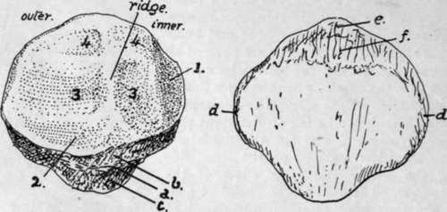
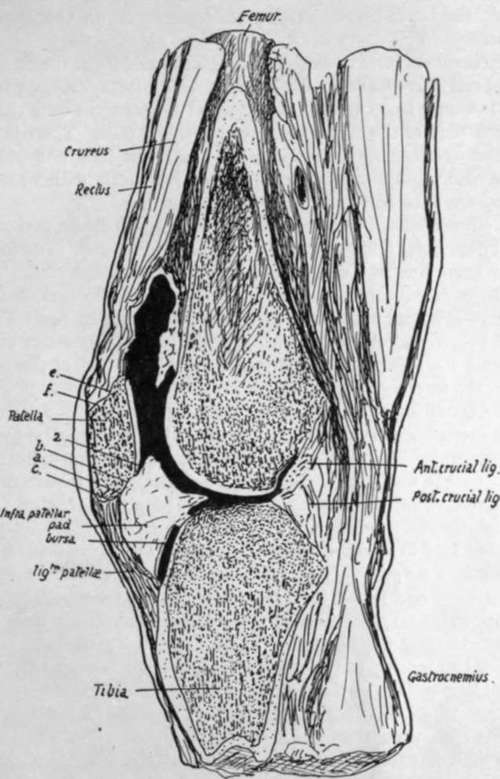

Patella
Description
This section is from the book "The Anatomy Of The Human Skeleton", by J. Ernest Frazer. Also available from Amazon: The anatomy of the human skeleton.
Patella
A bone situated in front of the knee joint, somewhat triangular in shape, with rounded margins and its apex pointing downwards. It may be looked on as a large sesamoid developed in the tendon of the Quadriceps, receiving the insertion of these muscles on its upper margin and sides and being attached below by the Ligamentum patellae or patellar tendon to the tubercle of the tibia. The aponeurotic fibres of the extensor group in which it exists are in fact continued over its surface into the tendon, so that it is sheathed in front by fibrous tissue that separates it from subcutaneous tissue and skin, and, in its lower part, from a subcutaneous bursa.
But its deep or posterior surface forms part of the front wall of the joint cavity, wherefore it carries a cartilage-covered articular surface. This moves up and down on the trochlear surface of the femur as the knee is moved, being always separated from the tibial tubercle by the length of the tendon.
The front surface of the bone is longitudinally ridged, indicating that the ossification has involved some of the deeper fibres of the aponeurotic tissue that covers its surface.
The margins show rough markings of Vasti and Crureus, and the top margin also receives the Rectus in front of Crureus. The outer margin is occasionally the seat of a rough process, constituting an " emarginated " bone, where ossification has extended into the tendon of the Vastus externus.
The deep surface of the bone is shown in Fig. 126. Observe that the articular area that rests on the outer condyle is larger than the inner one : this, in conjunction with the apex pointing downward, enables one to recognise the side to which the bone belongs.
The ridge between the two surfaces lies in the hollow of the trochlear surface of the"femur ; when the knee is bent the patella is carried downwards and backwards on to the under aspect of the femur, where the trochlear surface is prolonged on to the inner condyle. Articulate the two bones and slide the patella down until it lies in the position it would assume in flexion, and it is evident that the bone becomes somewhat tilted up on the'outer condyle, with the result that it is only the inner part of its articular surface which rests against the inner condyle ; at the same time the shape of the trochlear surface is such that the outer part of the patella is not in contact with the outer condyle, but the tilting is really due to the direction and level of the concavity in which the median ridge of the patella rides.
Fig. 126.-Left patella. Back and front views, i, medial vertical facet, usually considered to rest against the condylar trochlear surface in extreme flexion, but certainly covered by fatty synovial pads in large part; 2, surface overlaid by fatty folds below ; 3, 3, lower facets in contact with femur in extension ; 4, 4, upper facets in contact with femur in flexion. Other references given in text. To tell left from right, hold the bone so that the larger articular area is external and behind, with the " apex " down.
A rough sloping area extends between the lower margin of the articular surface and the point of the apex, and can be subdivided by the line a (Fig. 126) into two parts, an upper b and a lower c. The lower area c extends to the apex and is for the attachment of the patellar tendon, while the infrapatellar pad of fat, that lies deep to the tendon, comes in contact with the area b and is attached to it. Trace c round the bone : it is found to be continuous with the narrow strips d, d along the edges, seen on the dorsal aspect. These in their turn are continued into the wider area at the upper end of the dorsal surface, which can be subdivided as a rule without much difficulty into an upper e and a lower /. The strips d, d are for the Vasti, e for the Crureus, and / for the Rectus femoris : between / and the apex the bone is subcutaneous, although it is covered by a thick fibrous periosteum continuous with the aponeurosis, and the upper end of the bursa on the patellar tendon may lie on the lower part of this subcutaneous area.
Fig. 127.-Vertical antero-posterior section through knee-joint.
Fig. 127 represents a vertical section through the middle of the right knee in which the cavity has been partly filled with gelatine. The infrapatellar pad is well seen : observe that it not only has a tongue-like projection backward over the tibia, but also overlaps the lower part of the articular surface of the patella. There is another similar but much smaller overlapping fold above the bone, but it is not well shown in the section. Notice also the appearance of the areas just dealt with when they are seen on section ; they are lettered to correspond with Fig. 126.
The whole circumference of the patella is covered along its articular margins by overlapping fatty synovial folds similar to that seen in Fig. 127. The folds are smallest along the upper edge, but well developed along the remainder of the margin. Along the inner and lower edges there are definite areas where the articular cartilage is in contact with these synovial folds : the areas are shown in Fig. 126. These fatty folds are continuous below and laterally with the ligamenta mucosum et alaria respectively : the former ligament extends back from the lower end of the articular surface of the patella to the intercondylic notch of the femur.
In the early condition the ligamentum mucosum forms a complete septum below the level of the patella between the two halves of the lower (condylar) parts of the joint ; the septum is generally broken through at birth, leaving the upper part only as a band connecting patella and femur. Fig. 124 is a drawing of a case in which the septum remains complete. The ligamenta alaria are remains of the former division between the condylar and trochlear parts of the articulation.
The patella is held in position partly as a result of the tension of the Quadriceps muscles retaining it in its groove, and partly owing to the attachments of the aponeuroses that lie beside it and fasten it to the tissues in the neighbourhood of the lateral ligaments : some fibres are described as lying more transversely deep to the aponeurotic sheets and attached to the femur, known as the " retinacula patellae." When the knee is flexed the tension of the muscles and patellar tendon keep the bone firmly against the trochlear surface of the femur, and its articular surface rests on the femur by its upper areas when the knee is fully flexed, whereas its lower areas only are in contact with that bone when the joint is extended.
When the limb is extended the upper edge of the bone is about two or three fingers' breadths below the upper limit of the synovial cavity, and its lower end is a little above the upper surface of the tibia. The synovial membrane is reflected backwards and downwards from this end to the tibia. Its lower limit therefore lies somewhat below the lower end of the patella, perhaps a finger's breadth below it.
Development
The patella is preformed in cartilage that is apparent in the third month. It is cartilaginous at birth, and a bony centre appears in the third year and extends slowly, completing the bone about puberty.
Continue to: